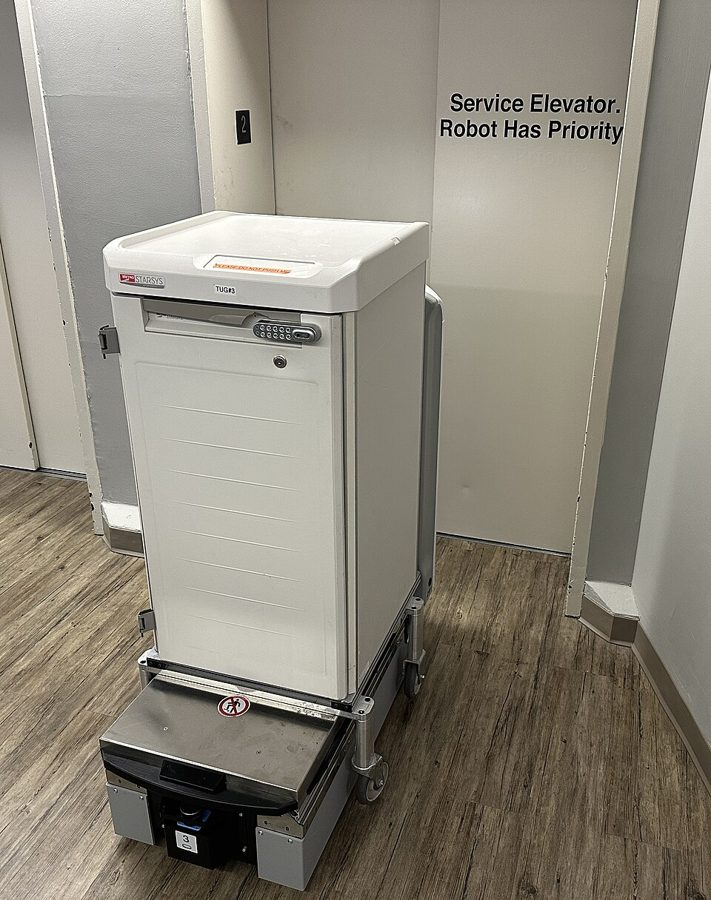
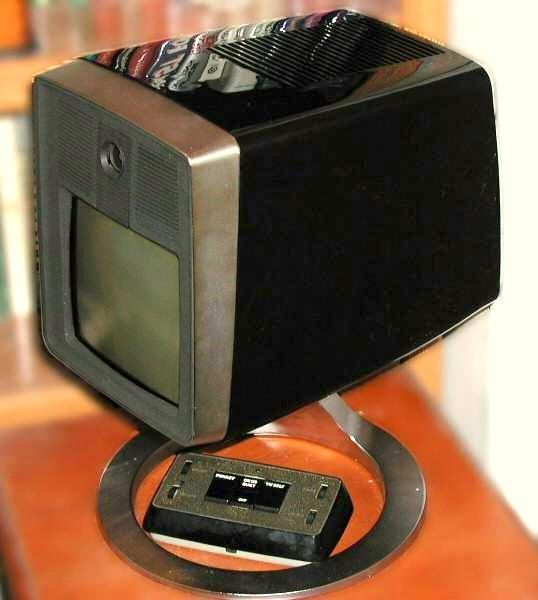

1956 年的想象 · 真实的 2000 年 · 今天
书里的点子，后来怎样了
这本书 1956 年连载，写的「未来」是 1970 年和 2000–2001 年。叙述者是个做家务机器的工程师，所以书里对机器的设想比一般科幻具体得多：扫地的、擦窗的、什么家务都干的、替工程师画图的。
这一页把这些点子一条条拿出来，对照两个时间点：书里说的那一年真实世界是什么样，今天（写于 2026 年 10 月）又走到了哪一步。各章页面的「书里的世界」讲的是读那一章需要的；这里只挑值得对比的，讲得更远一些。
不剧透照旧。有的点子本身就是包袱，所以每一条都挂在它第一次出现的那一页上，你把那一页标记读完，它才揭开。
没读完也想看、或者读完了懒得一页页去标记，就点这里。
家里的机器
Dan 的本行。也是这本书最常被人提起的地方。
扫地机器人Hired Girl
- 书里
- 一台自己满屋子找脏地方的清扫机，整天慢慢转，没电了自己回去充，价钱和一台好吸尘器差不多。捡到比小钢珠大的东西不敢扔，放进托盘等人来定。屋里有人，它就躲开。在书里它是 1960 年代的产品，到 1970 年已经是寻常家电。
- 2000 年前后
- 书里的 1970 年过去了三十年，家里还没有这种东西。2001 年瑞典 Electrolux 开卖 Trilobite，2002 年美国 iRobot 推出 Roomba，后者便宜得多，才真正卖开。只会吸尘，靠乱撞覆盖房间。
- 今天
- 已经是普通家电：用激光或摄像头建图，扫拖一体，回基站自己倒垃圾、洗拖布。「没电自己回去充」和书里一模一样。「捡到东西留给人定」至今没人做，现在的机器是认出袜子和数据线然后绕开。做出 Roomba 的 iRobot 在 2025 年 12 月申请破产保护，随后由替它代工的中国厂商接手；这个市场现在主要是中国品牌的。

擦窗机Window Willie
- 书里
- 用静电让污垢从玻璃、浴缸这类光滑表面上自己弹掉。Dan 给它定的设计原则很像今天的硬件：容易坏的部分全做成插拔模块，坏了不修，直接换。
- 2000 年前后
- 没有。
- 今天
- 静电除垢没成。但吸在玻璃上自己爬的擦窗机器人 2010 年代起有售，高楼外墙也有清洗机器人在试用。另一条路是让玻璃自己不沾灰：带涂层的「自洁玻璃」2001 年上市，靠的是光催化和雨水，不是静电。「模块坏了整块换」则成了电子产品的通行做法。
什么家务都干的机器Flexible Frank / Protean Pete
- 书里
- 一台顶所有专用机器的通用家务机，价钱和一辆好车差不多。Dan 不叫它 robot，也不做成人形：电动轮椅的底盘，上面装几条手臂。它不会「想」，靠 Thorsen 管记下人带着它做过的一整套动作，以后照做；另加一套电路，让它边做边核对条件，对不上就停下来叫人。
- 2000 年前后
- 工厂里有了：1961 年第一台工业机器人 Unimate 上岗，用的正是「带着做一遍、记下来、照做」。家里没有。2000 年本田的人形机器人 ASIMO 能走路上楼梯，是展示品。
- 今天
- 这是眼下机器人行业最热的方向，而且做法和书里出奇地像：让人戴着设备远程操纵机器做家务，把动作录下来，训练模型去模仿。区别在于今天的模型要从成千上万段示范里学出「差不多的情况怎么办」，Dan 的机器只会原样重放。几家公司在做人形的：挪威背景的 1X 在 2025 年 10 月开始接受家用机型 NEO 的预订，标价两万美元（正好是「一辆车的钱」），说 2026 年开始交付，做不了的活由公司的人远程接管；Figure 的机器在宝马工厂干过活；特斯拉的 Optimus 在准备量产。到写这一页时，还没有哪一台能在普通人家里不靠人帮忙把家务包下来。

医院里听口令的护理机Eager Beaver
- 书里
- 2000 年的医院里，送饭、倒咖啡、收盘子的自动机。听短语口令干活，身上挂一张口令卡，超出范围的话它不理。
- 2000 年前后
- 没有。医院里刚开始试用沿走廊送药、送被服的机器车，不会说也不会听。
- 今天
- 分成了两半，各自都成了，还没合到一起。送东西的机器车在医院、酒店、餐厅里已经常见。听人话这一半走得比书里远得多：2011 年起手机上有了语音助手，2022 年以后的大语言模型能听懂随口说的话，根本不需要口令卡。缺的是手：能在床边稳稳端一杯咖啡递给病人的机器，还在实验室里。

自动猫厕所cat bathroom
- 书里
- Dan 最后手上的设计之一：给猫用的室内厕所，自动清理、自己补料、没有气味。
- 2000 年前后
- 有了。自动耙砂的电动猫砂盆 1990 年代就在卖。
- 今天
- 滚筒式的自动猫砂盆是养猫人家的常见电器，带称重和手机提醒。全书里兑现得最准的一条，大概因为海因莱因自己养猫。
工程师的工具
给程序员读者：这几条说的就是你每天用的东西的祖先。
在键盘上画工程图Drafting Dan
- 书里
- 像打字机一样敲键盘，线条出现在画架上；改图不用擦，重敲就行；从一张立体图里能自动抽出平面图和立面图。Dan 的理由是：工程师的时间不该花在弯腰描线上。
- 2000 年前后
- 基本兑现。1963 年 MIT 的 Sketchpad 第一次让人在屏幕上画工程图，1982 年 AutoCAD 把它带到个人电脑上。到 2000 年，绘图板已经从设计室里消失了。
- 今天
- 更进了一步：现在是先建三维模型，各个视图、剖面、尺寸标注由软件自动生成，正是书里说的「从立体图里抽出平面图」。海因莱因猜错的只有一点：他以为这会是一台专用机器。结果它是通用计算机上的一个程序。

听写打字机dictation typewriter
- 书里
- Dan 在 2000 年想做的东西：对着它说话，它打出字来。他断定英语拼写太乱，这种机器只适合世界语那样拼读一致的语言，或者得让人按特殊规矩说话。
- 2000 年前后
- 1997 年已经有了面向普通人的连续语音听写软件，用的就是英语。要先花时间让它熟悉你的口音，错字不少。
- 今天
- 手机自带，各种语言和口音都行，不用训练。Dan 担心的拼写问题根本没成为障碍：机器不是靠「听音拼字」的规则，而是从海量录音和文本里学统计规律，同音词靠上下文分辨。这是书里完全没想到的路子。

机器的「记忆」Thorsen memory tube
- 书里
- 一种电子管，能记下一整套动作。全书所有自动机都靠它。到 2001 年还是这东西，只是装得更密。
- 2000 年前后
- 方向对，器件全错。1947 年晶体管已经发明，1958 年有了集成电路，1971 年有了微处理器。到 2000 年，电子管只剩音响发烧友在用。
- 今天
- 一块指甲大的芯片上有上百亿个晶体管。书里其实擦到了边：第 6 章提到 2000 年的工程师要懂 solid circuits，Dan 说自己只在刊物上读到过。集成电路问世在这本书出版两年之后。

全城联网的支票the universal checkbook system
- 书里
- 所有银行连在一张网上统一清算，在哪家银行都能当场取现。Dan 称它是一项真正的改进。
- 2000 年前后
- 兑现了，形式不同：自动取款机 1967 年出现，到 2000 年跨行联网、刷卡消费都已平常。
- 今天
- 手机一扫就付，支票本身快绝迹了。书里那张网叫 cybernet，只连银行；没想到的是会有一张把所有东西都连起来的网。
身体
冷眠cold sleep
- 书里
- 把活人降到 4℃ 存起来，几十年后唤醒，人不变老。由保险公司经营，贵，但已经是寻常生意。
- 2000 年前后
- 做不到。1967 年起有人在死后把遗体冷冻保存（cryonics，人体冷冻），指望未来的医学能救活。
- 今天
- 还是做不到。美国两家主要的机构各存着两百多人，没有一个被唤醒过，多数科学家不认为现有方法保存下来的大脑还能恢复。有一处和书里对上了：很多人是用人寿保险来付这笔钱的。真实医学里用得上的是短时间的低温：心脏手术时降温停循环；2019 年美国有医院报告，开始试着把重伤病人快速降到十几度，争取一两个小时的手术时间。离「睡三十年」差得很远。
让人听话的药the “zombie” drug
- 书里
- 打一针，人醒着，却没有自己的意志，叫做什么就做什么，还能下「事后照办」的指令。
- 2000 年前后
- 没有。
- 今天
- 没有。所谓「吐真剂」只是让人迷糊、话多。1950 年代美国情报机构确实秘密做过用药物控制心智的实验，1970 年代曝光，结论是做不到。
感冒、牙齿和不老the common cold / regeneration
- 书里
- 2000 年感冒已被攻克；蛀牙吃药预防，掉了的牙能长回来；女人靠老年医学加内分泌学，三十岁的样子能多保持三十年。
- 2000 年前后
- 都没有。
- 今天
- 感冒还是没治：引起它的病毒有两百多种。让牙齿重新长出来的药 2024 年在日本开始做人体试验，结果还没出来。外貌那一条靠的是医美，离书里说的差得远。
培养槽里长的肉surrogates
- 书里
- 餐馆里的肉多半是在槽里培养的代用品，真肉又贵又少。
- 2000 年前后
- 没有。
- 今天
- 技术上做出来了，生意上没成。2013 年第一块培养牛肉汉堡在伦敦试吃；2020 年新加坡第一个批准销售，美国 2023 年批准。但产量小、成本高，超市里基本见不到，美国有的州还立法禁售。书里把它写成了便宜货，现实里它是贵的那个。
城市与出行
车自己开automatic control
- 书里
- 1970 年的洛杉矶，上了干道就把车交给道路系统，人可以不管，出了范围再切回手动。
- 2000 年前后
- 没有，只有定速巡航。
- 今天
- 有了，晚了五十年，做法也反过来：不是路管车，是车自己看路。Waymo 的无人出租车 2026 年春在美国十来个城市运营，每周五十万单左右；武汉等中国城市也有成规模的无人出租车。私家车上的是辅助驾驶，人还得盯着。
会动的路the Ways / slide
- 书里
- 城里的主干道成了载人的传送带，楼里有站上去就走的 slide。
- 2000 年前后
- 只在机场和地铁换乘通道里有。
- 今天
- 还是只在机场。这是海因莱因的老点子，1940 年就专门写过一篇。它输给了更便宜的办法：地铁、电梯和扶梯。

带屏幕的电话visual phone
- 书里
- 2000 年的电话默认带画面，没有屏幕的反倒要特意说一声。
- 2000 年前后
- 没有普及。AT&T 的 Picturephone 1970 年商用，没几年就停了：贵，而且人们并不想打电话时被看见。
- 今天
- 视频通话人人在用，2020 年以后连开会都靠它。成的原因不是电话公司造出了更好的可视电话，而是每个人兜里有了一台带摄像头的联网电脑。

碰一下就翻页的报纸the Great Los Angeles Times / book scanner
- 书里
- 报纸是光面的小开本，碰一下角落自动翻页；库房里有让文字一行行滚过去的读书机。
- 2000 年前后
- 没有。电子墨水屏还在实验室里。
- 今天
- 电子阅读器 2007 年、平板电脑 2010 年起流行，「碰一下翻页」成了最平常的动作。纸质报纸本身倒是在消失。
一按就合上的衣缝Sticktite
- 书里
- 2000 年的衣服不用纽扣拉链，接缝一压就粘住。
- 2000 年前后
- 有，但只用在鞋和外套上。
- 今天
- 还是那样。这一条不算预言：魔术贴的专利就是 1950 年代中期拿到的，海因莱因写书时它刚刚问世，他只是猜它会取代拉链。没有。

月球班机、金星基地、火星航线Luna shuttle
- 书里
- 2000 年有去月球的定期航班，金星上有科研基地，地球和火星之间有船往来。
- 2000 年前后
- 1969 到 1972 年有十二个人登上月球，之后再没人去过。2000 年 11 月起国际空间站常年有人，离地面四百公里。
- 今天
- 2026 年 4 月，阿耳忒弥斯 2 号载着四个人绕月飞了一圈，是五十多年来头一回。火星只去过探测器。金星表面四百多度、九十个大气压，没人打算去住。书里对太空的估计是全书最乐观的，那是 1950 年代的普遍心情：第一颗人造卫星在这本书连载完的第二年上天。
失重NullGrav
- 书里
- 在局部改变空间的形状，让重物失重，搬机器用一只手就行。
- 2000 年前后
- 没有。
- 今天
- 没有，物理学里也看不到路。
不值钱的黄金engineering gold
- 书里
- 1987 年的金融恐慌之后，黄金不再是货币的基础，价格大跌，成了便宜的工程材料。
- 2000 年前后
- 前一半说中了：1971 年美元和黄金脱钩。后一半反了：金价没有跌，从官定的每盎司 35 美元涨到 2001 年的 270 美元上下。
- 今天
- 2025 年突破每盎司 4000 美元。黄金确实是好用的工程材料，你手机的触点上就有，但用量是以毫克计的。
时间旅行time travel
- 书里
- 有人做成过，军方封存了。代价是要拿等质量的两份东西，一份去过去，一份去未来，而且事先不知道哪份去哪头。
- 2000 年前后
- 没有。
- 今天
- 没有。向未来「旅行」在物理上是允许的，高速运动的钟走得慢，宇航员每次回来都比地面上的人年轻了几毫秒。回到过去没有任何实验证据。海因莱因给时间机器加上「动量要守恒」这种工程约束，是这本书的标志性写法：连幻想出来的机器也得讲规格。
他完全没想到的
比猜错更有意思的是没猜的。
个人电脑、互联网、手机读到第 8 章，你已经看见 Dan 在 2001 年是怎么找人的
- 书里
- 2001 年的 Dan 要找一个人：翻电话簿，查选民册，给各地的机构写信等回信，去报社资料室摇微缩胶片，为一条记录亲自开车跑几百公里。打电话要找到一部电话，插卡。
- 真实的 2001 年
- 搜索引擎、电子邮件、手机都已普及。他那几个月的奔波，大半可以坐在桌前几个小时做完。
- 为什么没想到
- 书里的每台机器都是专用的：扫地的有扫地的记忆管，画图的有画图的。计算机在书里只是导弹和银行后台里的大机器。没有人想到会有一台便宜的通用机器，靠换程序干所有的事，更没想到这些机器会连成一张网。这不只是海因莱因的盲点，1950 年代的科幻几乎都这样：把力气更大的机器想得很远，把处理信息的机器想得很近。
办公室里是谁在干活秘书、打字员、Hired Girl 这个名字
- 书里
- 1970 年和 2001 年的办公室里，工程师和经理都是男人，打字、接电话的都是女人。家务机器叫 Hired Girl（雇来的女佣），广告是做给「家庭主妇」看的。
- 真实的 2001 年
- 美国的职场已经不是这样了。
- 为什么没想到
- 技术上的未来比社会上的未来好猜。海因莱因让机器进步了五十年，办公室里的分工却原封不动地留在了 1956 年。读的时候留意这一点，比挑他哪样机器没猜中更有意思。
算总账读完全书再看
| 结果 | 哪些 | 共同点 |
|---|---|---|
| 猜中了 | 扫地机器人、电脑绘图、语音听写、联网的银行、无人驾驶、视频通话、电子阅读、自动猫厕所 | 都是「把一件具体的苦差事交给机器」。他是从需求往前推的，推得准。 |
| 猜对一半 | 擦窗机、医院护理机、培养肉、黄金、记忆管 | 要做的事猜对了，用什么办法做猜错了。 |
| 还在路上 | 什么都干的家务机器 | 七十年前定的目标，今天最热的创业方向。 |
| 没成 | 冷眠、听话药、治感冒、会动的路、太空殖民、失重、时间旅行 | 要么需要新的物理和生物学，要么有更便宜的替代。 |
| 没想到 | 通用计算机、互联网、手机、职场的变化 | 都不是「更强的机器」，而是「换了一种组织方式」。 |
年份也值得看一眼。他猜中的东西，几乎没有一样是在书里说的 1970 年出现的，多数连 2000 年都没赶上，是在 2000 到 2025 年之间才成的。方向对，时间早了三十到五十年。书里 Dan 自己有句话正好拿来评这件事：到了该修铁路的时候，铁路才修得成。
这一页里「今天」的说法写于 2026 年 10 月，机器人和无人驾驶这两块变得很快，过一两年再看会有出入。